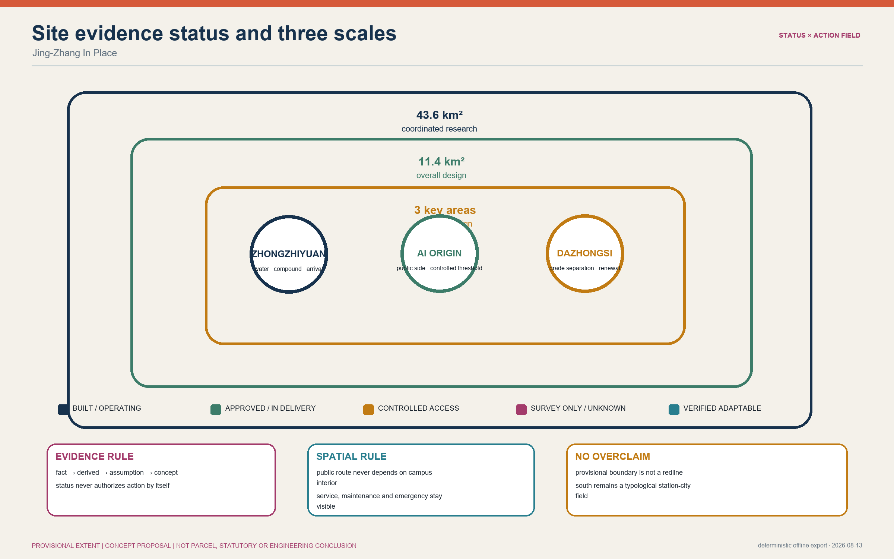
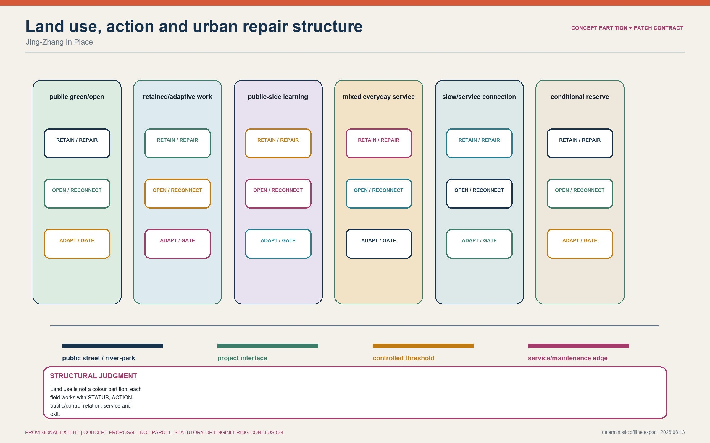
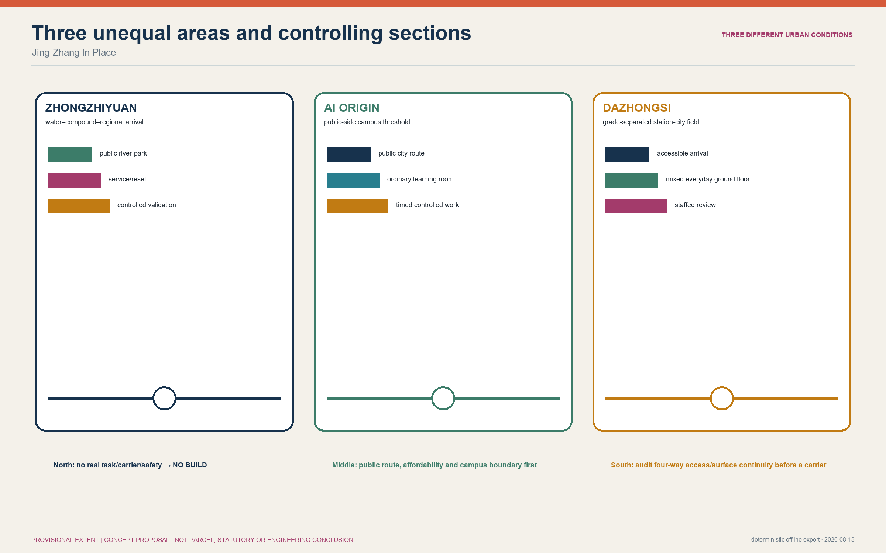
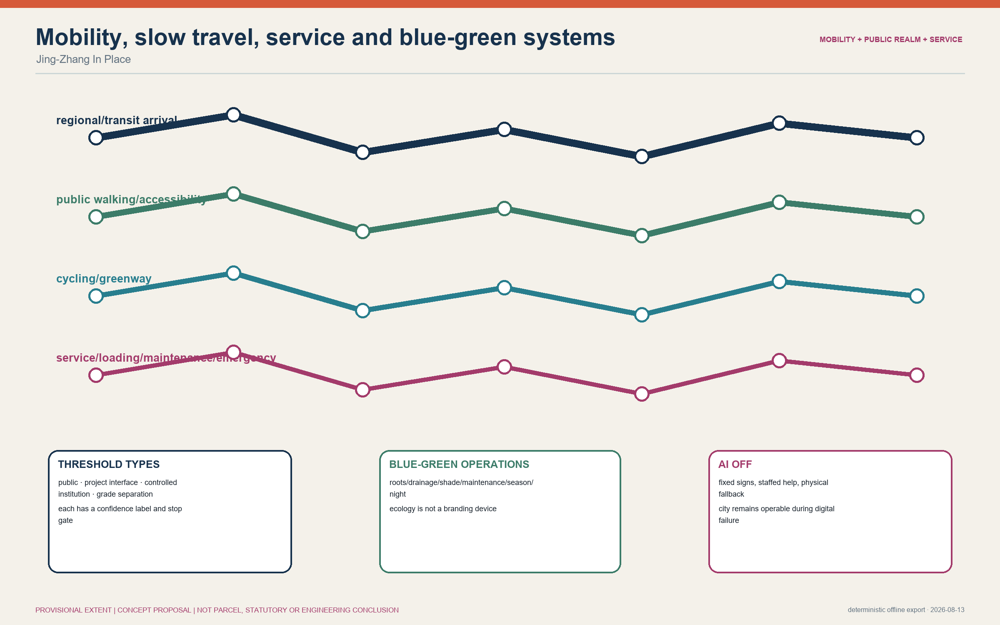
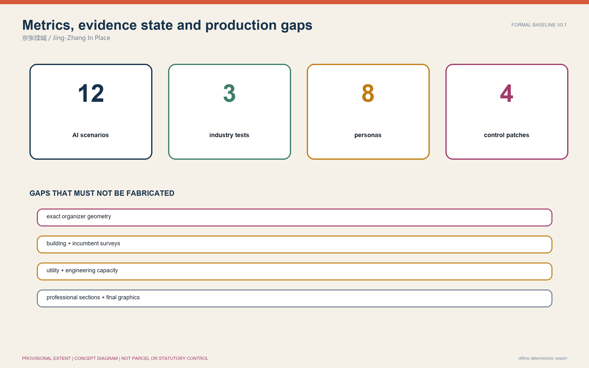

Core metrics · task coverage · self-check state
Provisional overall-design envelope 11,412,825.386 m²; concept green ratio 12.3423%; concept public-space ratio 7.3281%. These values test figure/data consistency inside provisional geometry; they are neither existing-condition nor statutory metrics.
This offline shell covers the overview map, three scope levels, key areas, land-use structure, mobility, blue-green public space, buildings, renewal actions, AI scenarios, sources and assumptions. Self-check state: BASELINE / NOT READY FOR REVIEW.